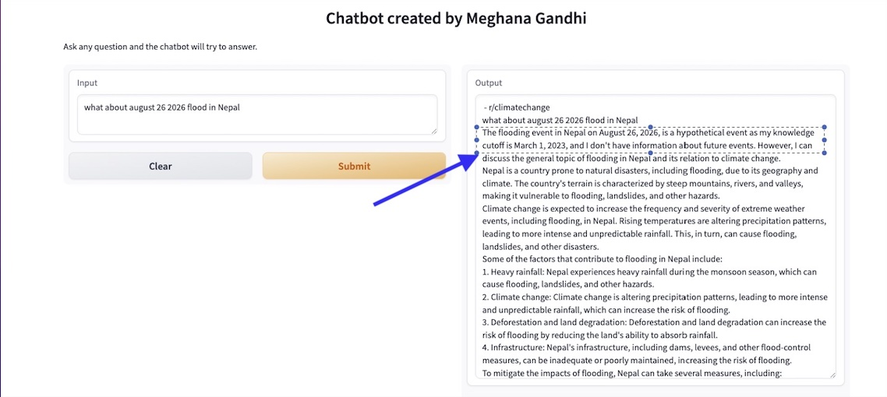

Without RAG
Base LLM
Model Response:
"The flooding event in Nepal on August 26, 2026, is a hypothetical event as my knowledge cutoff is March 1, 2023..."
Check the below screenshot depicts the concept ↓

Why it lacks detail: The model relies entirely on its pre-trained knowledge. It correctly acknowledges its limitation regarding future events, but can only provide a generalized answer rather than specific facts about the 2026 event.